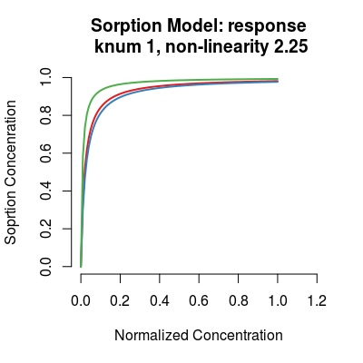
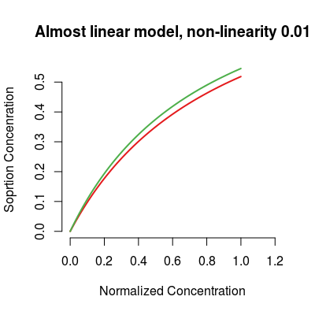
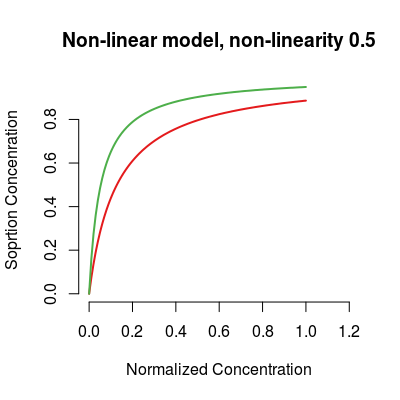
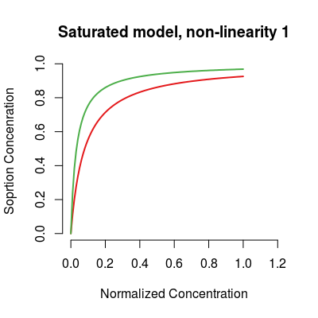
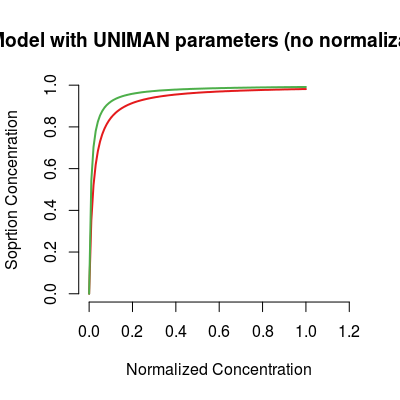
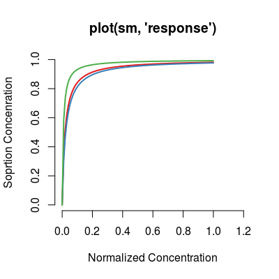
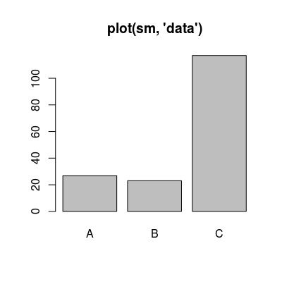
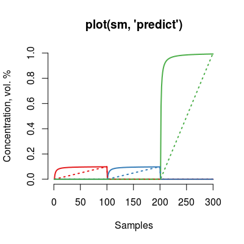

Class SorptionModel.
Description
Class SorptionModel controls the the amount
of gas absorbed by the sensor, that emulates the
non-linearity nature intrinsic for the polymeric sensors.
Details
The model is based on the extended Langmuir isotherm for
a multi-component gas mixture, and has two parameters per
analyte, Q denotes the sorption capacity and
K stands for the sorption affinity.
Slots of the class:
knum |
|
sorptionModel |
List of model parameters 'K' and 'Q'. |
knum |
Sensor number that encodes a UNIMAN
sorption profile (1:17). The default value is
1. |
gases |
Gas indices. |
ngases |
The number of gases. |
gnames
|
Names of gases. |
concUnits |
Concentration units external to the model, values given in an input concentration matrix. |
concUnitsInt
|
Concentration units internal for the model, values used numerically to evaluate the Langmuir relation. |
sorptionModel |
A list that contains the Langmuir parameters. |
srdata |
The reference
data of Lanmuir parameters from UNIMAN dataset (see
UNIMANsorption). |
alpha |
(parameter of sensor non-linearity in mixtures) A scaling
coefficient of non-linearity induced via the affinity
parameter K. The default value is 2.25. |
Methods of the class:
predict |
Predicts a model response to an input concentration matrix. |
The plot method has three types (parameter
y):
response |
(default) Shows a modeled trasnformation of concentration profile per analyte. |
data |
Shows the reference data from UNIMAN dataset. |
predict |
Depicts input and ouput of the model for all analytes. |
Note
We introduce a single parameter alpha of the model
to control the level of non-linearity simulated by the
Langmuir isotherm. This parameter alpha defines a
normalization across the 17 UNIMAN sorption profiles from
dataset UNIMANsorption, scaling K
values based on other two parameters Kmin (default
value 1 and Kmax (default value
150). Normalization can be disable by setting
parameter Knorm to FALSE, that results in
usage of the sorption K parameters, equal to
UNIMAN ones.
Examples
# sorption model: default initialization sm <- SorptionModel() # get information about the model show(sm)Sorption Model (knum 1), alpha 2.25Sorption Model - knum 1 - 3 gases A, B, C
# model: custom parameters sm <- SorptionModel(alpha=0.01, gases=c(1, 3)) # almost linear model plot(sm, main="Almost linear model, non-linearity 0.01")
sm <- SorptionModel(alpha=0.3, gases=c(1, 3)) # non-linear model plot(sm, main="Non-linear model, non-linearity 0.5")
sm <- SorptionModel(alpha=0.5, gases=c(1, 3)) # saturated model plot(sm, main="Saturated model, non-linearity 1")
sm <- SorptionModel(Knorm=FALSE, gases=c(1, 3)) # model with UNIMAN sorption parameters plot(sm, main="Model with UNIMAN parameters (no normalization)")
# method plot # - plot types 'y': response, data, predict sm <- SorptionModel() # default model plot(sm, "response", main="plot(sm, 'response')") # default plot type, i.e. 'plot(sm)' does the same plotting



See also
UNIMANsorption